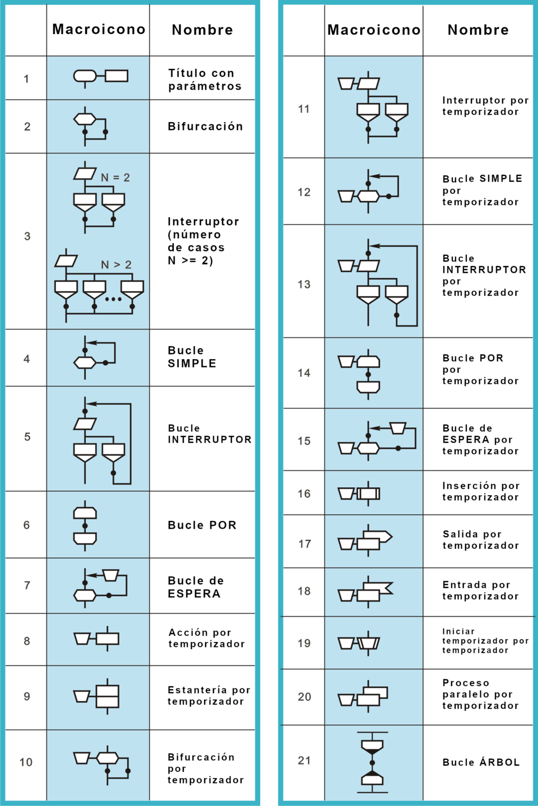

¿Que es progamacón?
La programación es el proceso de crear un conjunto de instrucciones que le dicen a una computadora como realizar algún tipo de tarea. Pero no solo la acción de escribir un código para que la computadora o el software lo ejecute. Incluye, además, todas las tareas necesarias para que el código funcione correctamente y cumpla el objetivo para el cual se escribió.
En la actualidad, la noción de programación se encuentra muy asociada a la creación de aplicaciones de informática y videojuegos. En este sentido, es el proceso por el cual una persona desarrolla un programa, valiéndose de una herramienta que le permita escribir el código (el cual puede estar en uno o varios lenguajes, como C++, Java y Python, entre muchos otros) y de otra que sea capaz de “traducirlo” a lo que se conoce como lenguaje de máquina, que puede "comprender" el microprocesador.
.jpg)
Funcionamiento de un programa
Para crear un programa y que la computadora lo interprete y ejecute, las instrucciones deben escribirse en un lenguaje de programación.
El lenguaje entendido por una computadora se conoce como código máquina. Consiste en secuencias de instrucciones básicas que el procesador reconoce, codificadas como cadenas de números 1 y 0 (sistema binario). En los primeros tiempos de la computación se programaba directamente en código máquina. Escribir programas así resultaba demasiado complicado, también era difícil entenderlos y mantenerlos una vez escritos. Con el tiempo, se fueron desarrollando herramientas para facilitar el trabajo.
Los primeros científicos que trabajaron en el área decidieron reemplazar las secuencias de unos y ceros por mnemónicos, que son abreviaturas en inglés de la función que cumple una instrucción de procesador.
